Práctica 7: Despliegue de una aplicación en Netlify (PaaS)
Nota
Para esta práctica vamos a crearnos cuentas en distintos servicios cuando se os pida:
Introducción
En la práctica anterior hemos visto cómo desplegar una aplicación de Node.js sobre un servidor Express en local (en nuestro propio servidor Debian).
La práctica anterior podría asemejarse a las pruebas que realiza un desarrollador antes de pasar su aplicación al entorno de producción.
Ya sabemos que entendemos el despliegue o deployment como el proceso de mover nuestro código típicamente de un sistema de control de versiones a una plataforma de hosting donde se aloja y es servida a los usuarios finales.
A la hora de desplegar la aplicación en producción, podría utilizarse el método de copiar los archivos al servidor concreto vía el vetusto FTP, SSH u otros y desplegarla para dejarla funcionando. No obstante, esta práctica se acerca más a la realidad ya que utilizaremos un repositorio de Github y una plataforma de PaaS (Platform as a Service) como Netlify para desplegar adecuadamente nuestra aplicación en producción.
¿Qué es Github?
A pesar de que trataremos un poco más en profundidad Github en un tema posterior, daremos una breve explicación aquí.
GitHub es un servicio basado en la nube que aloja un sistema de control de versiones (VCS) llamado Git. Éste permite a los desarrolladores colaborar y realizar cambios en proyectos compartidos, a la vez que mantienen un seguimiento detallado de su progreso.

El control de versiones es un sistema que ayuda a rastrear y gestionar los cambios realizados en un archivo o conjunto de archivos. Utilizado principalmente por ingenieros de software para hacer un seguimiento de las modificaciones realizadas en el código fuente, el sistema de control de versiones les permite analizar todos los cambios y revertirlos sin repercusiones si se comete un error.
¿Qué es Netlify?
Netlify es un proveedor de alojamiento en la nube que proporciona servicios de backend sin servidor (serverless) para sitios web estáticos. Está diseñado para maximizar la productividad en el sentido de que permite a los desarrolladores (especialmente orientados al frontend), y a los ingenieros construir, probar y desplegar rápidamente sitios web/aplicaciones.
Funciona conectándose a un repositorio de GitHub, de donde extrae el código fuente. A continuación, ejecutará un proceso de construcción para pre-renderizar las páginas de nuestro sitio web/aplicación en archivos estáticos.

Hay numerosas razones a favor de usar Netlify, aquí están algunas de ellas:
-
Netlify hace que sea increíblemente sencillo desplegar un sitio web - de hecho, la forma más sencilla de lograrlo es utilizar GitHub, GitLab o Bitbucket para configurar el despliegue continuo.
-
Netlify hace que sea súper fácil lanzar un sitio web con su solución de gestión de DNS incorporada.
-
Podríamos desplegar fácilmente sólo una rama específica de nuestro proyecto Git - esto es útil para probar nuevas características que pueden o no llegar a la rama maestra/principal, o para determinar rápidamente cómo un PR (Pull Request) afectará a su sitio.
-
Netlify te permite previsualizar cualquier despliegue que hagas o quieras hacer - esto te permite a ti y a tu equipo ver cómo se verán los cambios en producción sin tener que desplegarlos en tu sitio existente.
-
Netlify proporciona una práctica función de envío de formularios que nos permite recoger información de los usuarios.
Note
Tanto Github como Netlify pueden ser controlados desde el terminal de nuestro Linux, por lo que seguiremos el procedimiento de contectarnos vía SSH a nuestro Debian y realizar las operaciones por terminal.
Preparación del entorno
Vuestra primera tarea será registraros en Netlify con vuestro email (no con vuestra cuenta de Github) y decirle que no cuando os pida enlazar con vuestra cuenta de Github (lo haremos más adelante).
Crearemos una EC2 Debian básica en AWS Academy. Nos conectaremos a ella por SSH, actualizaremos los repositorios e instalaremos GIT. También instalaremos Node.js como hicimos en la práctica P3.4.
Opciones de despliegue en Netlify
Por mera curiosidad y ambición de aprendizaje, vamos a ver dos métodos de despliegue en Netlify:
- Despliegue manual desde el CLI de Netlify, es decir, desde el terminal, a partir de un directorio local de nuestra máquina.
- Despliegue desde un código publicado en uno de nuestros repositorios de Github
El primero nos permitirá conocer el CLI de Netlify y el segundo nos acercará más a una experiencia real de despliegue.
Despliegue mediante CLI
Una vez registrados, debemos instalar el CLI de Netlify para ejecutar sus comandos desde el terminal:
Está claro que para realizar acciones de deploy, Netlify nos solicitará una autenticación, esto se hace mediante el comando:
El cual nos muestra una pantalla del navegador para que concedamos la autorización pertinente. Sin embargo, recordemos el problema de que estamos conectados por SSH a nuestro servidor y no tenemos la posibilidad del uso de un entorno gráfico. Una forma de solucionarlo la tenemos en la "Práctica Voluntaria 3.1 - Despliegue de una aplicación Node.js en Heroku (PaaS)", pero Netlify nos ofrece otra forma.
En este caso, siguiendo las instrucciones de la documentación:
-
Nos logeamos en Netlify
-
Generamos el token de acceso
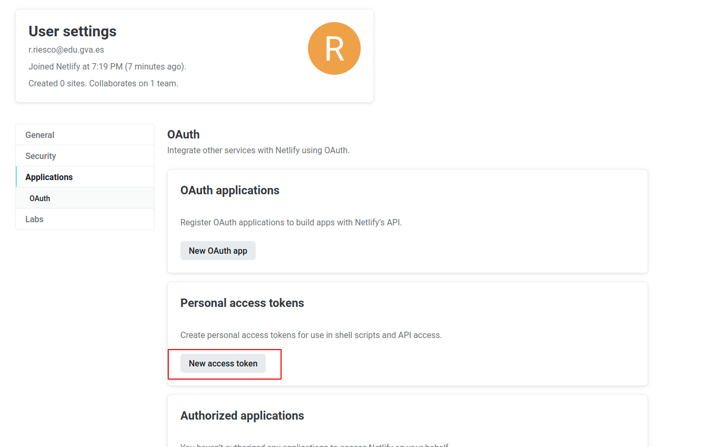

-
Lo establecemos como variable de ambiente:

Y nos logueamos
Ya estamos conectados a Netlify desde nuestro terminal. Ahora ya podemos ejecutar comandos para realizar el despliegue en Netlify. Pero todavía no tenemos nada que desplegar. Vamos a ello.
Puesto que el interés en este módulo radica en el proceso de despliegue, suponiendo que la parte de desarrollo ya es abordada en otros módulos, vamos a utilizar una aplicación de ejemplo que nos ahorre tiempo para centrarnos en el despliegue.
Nos clonaremos este repositorio en el home de admin:
git clone https://github.com/StackAbuse/color-shades-generator
Entraremos ahora en el directorio creado:
Podemos navegar por la estructura de directorios de la aplicación descargada y ver los ficheros y directorios creados. No sabemos con qué framework se ha creado pero lo que necesitamos saber estará en el fichero package.json.
npm install.
"dependencies": {
"@testing-library/jest-dom": "^5.16.1",
"@testing-library/react": "^12.1.2",
"@testing-library/user-event": "^13.5.0",
"react": "^17.0.2",
"react-dom": "^17.0.2",
"react-icons": "^4.3.1",
"react-scripts": "5.0.0",
"values.js": "^2.0.0",
"web-vitals": "^2.1.3"
},
La otra sección importante es "scripts".
"scripts": {
"start": "react-scripts start",
"build": "react-scripts build",
"test": "react-scripts test",
"eject": "react-scripts eject"
},
Estos son los scripts que podemos lanzar con npm para las distintas fases de desarrollo y despliegue. Los podremos lanzar con npm run start por ejemplo. En casi todos los proyectos encontraremos un start, build, test... Esto nos permitirá hacer un "build" para generar todos los archivos que luego subiremos al servidor sin necesidad de saber los comandos necesarios en el framework específico que se ha usado.
Bueno, tenemos el código de nuestra aplicación, tenemos nuestra cuenta en Netlify y tenemos el CLI necesario para ejecutar comandos desde el terminal en esa cuenta... ¿Podemos proceder al despliegue sin mayores complicaciones?
La respuesta es NO, como buenos desarrolladores y en base a experiencias anteriores, ya sabéis que hay que hacer un build de la aplicación para, posteriormente, desplegarla. Vamos a ello.
En primer lugar, como sabemos, debemos instalar todas las dependencias que vienen indicadas en el archivo package.json:
Ya tenemos las dependencias instaladas. Vamos a probar el primer script start, que nos servirá la aplicación en nuestro server para probar que funciona.
La respuesta será algo similar a:
Compiled successfully!
You can now view color-shades-generator in the browser.
Local: http://localhost:3000
On Your Network: http://172.31.80.11:3000
Note that the development build is not optimized.
To create a production build, use npm run build.
asset static/js/bundle.js 5.55 MiB [emitted] (name: main) 1 related asset
asset index.html 678 bytes [emitted]
asset asset-manifest.json 190 bytes [emitted]
cached modules 4.88 MiB (javascript) 28.2 KiB (runtime) [cached] 123 modules
webpack 5.65.0 compiled successfully in 2388 m
Prueba a acceder a la página web que se está sirviendo. Recuerda que deberás cambiar la localhost por la IP externa de tu EC2.
Para dejar de servir CTRL+C
Como nos decía el mensaje anterior, una vez comprobada podemos crear un build para producción con npm run build. Esto nos creará una nueva carpeta que puede ser distinta dependiendo del framework utilizado. Una forma de saberlo es anotar, antes de ejecutar el build, todas las carpetas existentes, y ver cúal es la nueva creada tras ejecutar el comando. Otra forma es conocer el framework y saber cuál es la carpeta que crea:
Si todo va bien obtendrás algo así:
> color-shades-generator@0.1.0 build
> react-scripts build
Creating an optimized production build...
Browserslist: caniuse-lite is outdated. Please run:
npx browserslist@latest --update-db
Why you should do it regularly: https://github.com/browserslist/browserslist#browsers-data-updating
Compiled successfully.
File sizes after gzip:
48.93 kB build/static/js/main.56aeaed6.js
965 B build/static/css/main.e106b4ce.css
The project was built assuming it is hosted at /.
You can control this with the homepage field in your package.json.
The build folder is ready to be deployed.
You may serve it with a static server:
npm install -g serve
serve -s build
Find out more about deployment here:
https://cra.link/deployment
En este caso la propia respuesta nos dice "The build folder is ready to be deployed.". Así que ya sabemos que la carpeta que contendrá la aplicación que debemos desplegar se llama build. Fíjate que dentro de esa carpeta hay un fichero index.html. En otro framework puede llamarse de otra forma y crear varios niveles de carpetas. La ruta donde esté ese index.html es la que nos interesará más adelante para hacer el deploy.
Bueno, ya tenemos la carpeta build lista para hacer un pre-deploy en Netlify y comprobar que al subirla allí, sigue funcionando:
Nos hará algunas preguntas para el despliegue:- Indicamos que queremos crear y configurar un nuevo site
- El Team lo dejamos por defecto
- Le indicamos el nombre que queremos emplear para la web (
tunombre-practica3-6) sustituyetunombrepor tu nombre de pila, y - el directorio a utilizar para el deploy. Usaremos el directorio
./buildque vimos antes que contiene elindex.html. Si usamos otro framework buscaremos ese fichero y pondremos aquí la ruta completa que lo contiene.
Y si nos indica que todo ha ido bien e incluso podemos ver el "borrador" (Website Draft URL) de la web que nos aporta. Copia esa URL, pégala en el navegador de tu ordenador local y comprueba que la aplicación se ha desplegado correctamente. En este caso ya es una IP pública. No necesitas modificarla.
Si todo va bien ya podemos pasarla a producción finalmente tal y como nos indica la misma salida del comando:
If everything looks good on your draft URL, deploy it to your main site URL with the --prod flag.
netlify deploy --prod
Haz la prueba. Cuando te pida el "Publish directory" debes ponerle ./build nuevamente.
Ya puedes acceder a tu aplicación en https://tunombre-practica3-6.netlify.app/.
Ve a la página web de Netlify y busca tu aplicación. Comprueba las opciones que tienes y qué puedes modificar desde allí.
Atención
Si tienes que desplegar otra aplicación que no sabes con qué framework se ha hecho necesitarás saber para poder desplegarla:
-
Cómo llamar al script del "build". Lo tienes en la sección scripts del package.json
-
El directorio que se genera al ejecutar el build y dónde se encuentra el index.html dentro de ese directorio. O conoces el framework o buscas el index.html dentro de las carpetas creadas tras el build.
Despliegue mediante conexión con Github
En primer lugar, vamos a eliminar el site que hemos desplegado antes en Netlify para evitarnos cualquier problema y/o conflicto:
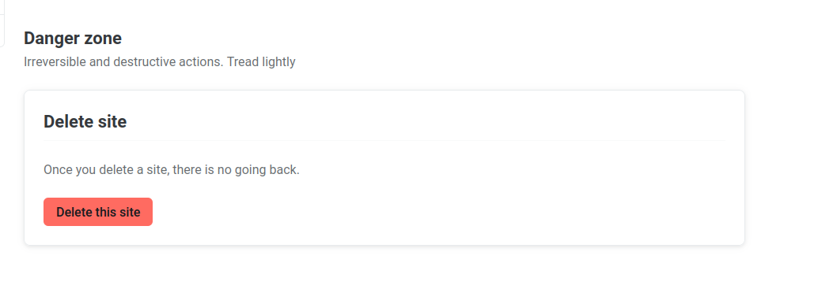
En segundo lugar, vamos a borrar el directorio donde se halla el repositorio clonado en el paso anterior para así poder empezar de 0:
Como queremos simular que hemos picado el código a man o en local y lo vamos a subir a Github por primera vez, nos descargaremos los fuentes en formato .zip sin que tenga ninguna referencia a Github:
Entramos en la carpeta donde está el código:
Ahora debemos crear un repositorio completamente vacío en Github que se llamepracticaTresSeis:
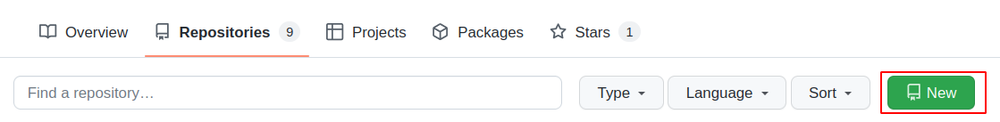
Y tras ello, volviendo al terminal a la carpeta donde estábamos, la iniciamos como repositorio, añadimos todo el contenido de la misma para el commit, hacemos el commit con el mensaje correspondiente y creamos la rama main:
Y ahora sólo queda referenciar nuestra carpeta al repositorio recién creado en Github y hacer un push para subir todo el contenido del commit a él:
- Ve a GitHub, selecciona tu foto arriba a la derecha y luego "Settings"
- Busca "<> Developer settings"
- Ahora "Personal access tokens" - "Tokens (classic)
- Selecciona la casilla "repo"
- Y finaliza con "Generat token"
- Copia el token generado y esa será la password que tendrás que poner.
Ahora que ya tenemos subido el código a GitHub, de alguna manera debemos enganchar o enlazar nuestra cuenta de Github con la de Netlify para que éste último pueda traerse el código de allí, hacer el build y desplegarlo. Así pues, entramos en nuestro dashboard de Netlify y le damos a importar proyecto existente de git:
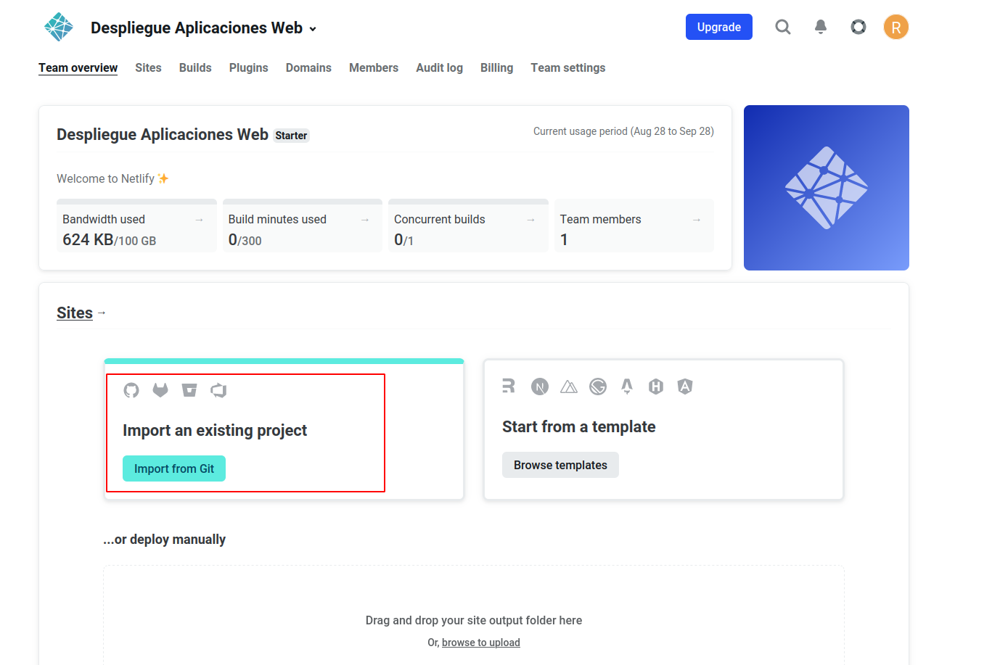
Le indicamos que concretamente de Github:
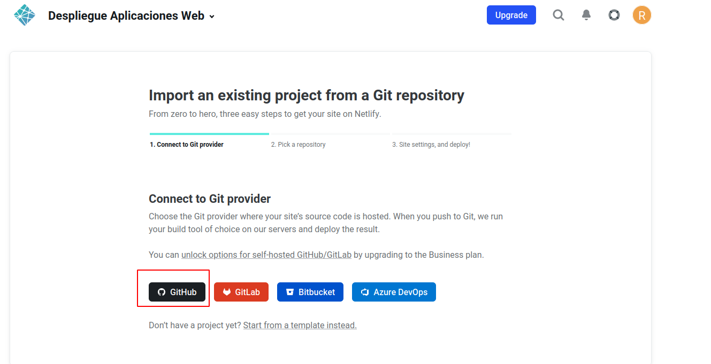
Y nos saltará una ventana pidiendo que autoricemos a Netlify a acceder a nuestros repositorios de Github:
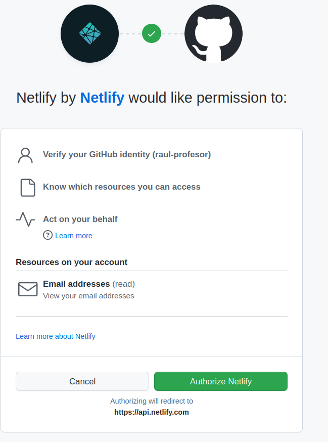
Y luego le indicaremos que no acceda a todos nuestros repositorios sino sólo al repositorio que necesitamos, que es donde tenemos el código de nuestra aplicación:
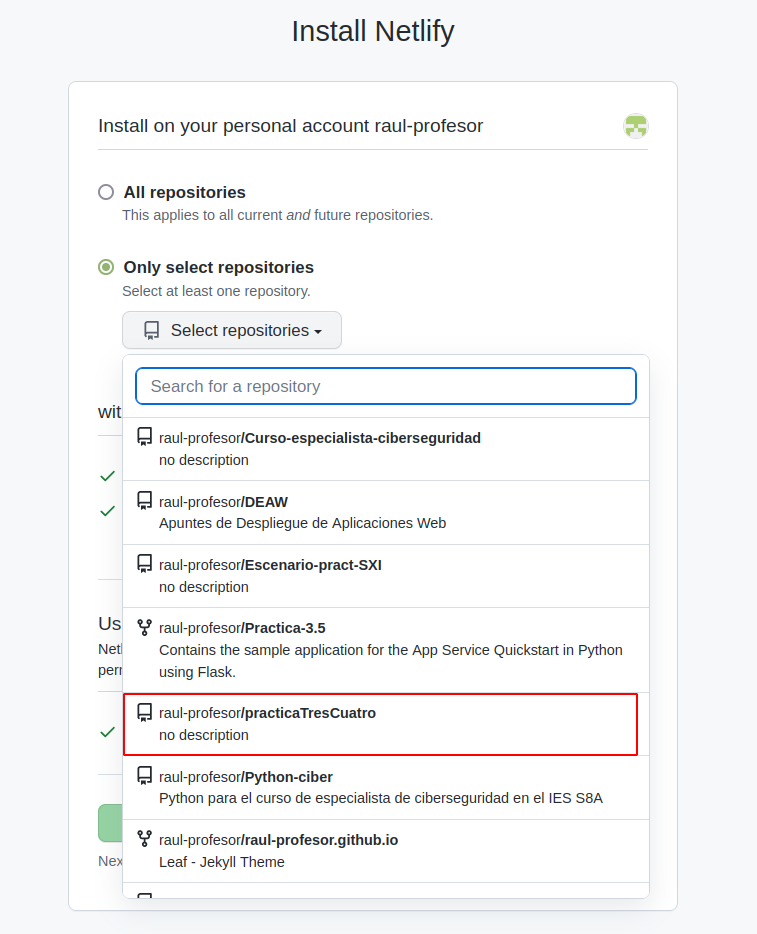
Y ya quedará todo listo:
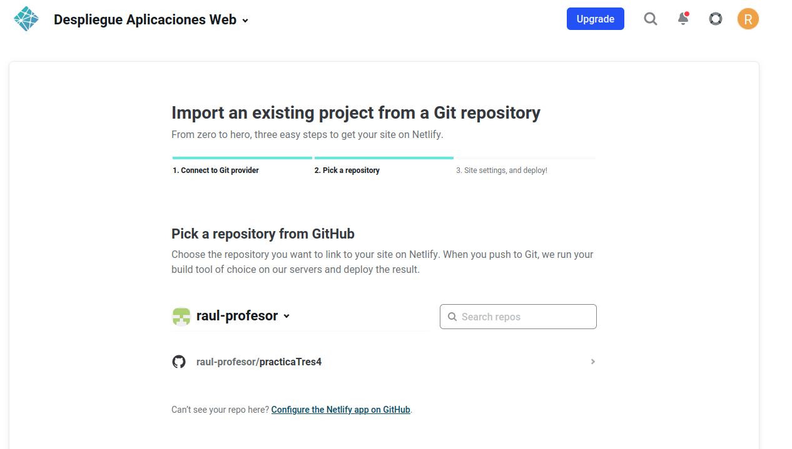
Y desplegamos la aplicación:
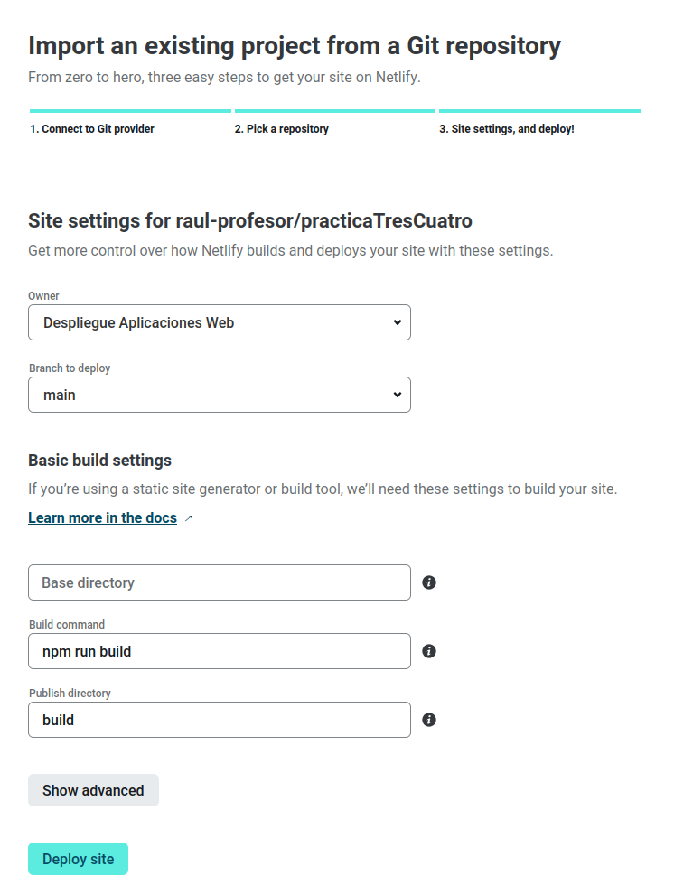
Netlify se encargará de hacer el build de forma automática tal y como hemos visto en la imagen de arriba, con el comando npm run build, publicando el contenido del directorio build.
Atención
Tras el deploy, en "Site settings" podeís y debéis cambiar el nombre de la aplicación por nombre-practica3-4, donde nombre es vuestro nombre.
Lo que hemos conseguido de esta forma es que, cualquier cambio que hagamos en el proyecto y del que hagamos commit y push en Github, automáticamente genere un nuevo despliegue en Netlify. Es el principio de lo que más adelante veremos como despliegue continuo.
Comprobemos que realmente es así:
-
Dentro de la carpeta
publicencontramos el archivorobots.txt, cuyo cometido es indicar a los rastreadores de los buscadores a qué URLs del sitio pueden acceder. A este archivo se puede acceder a través de la URL del site: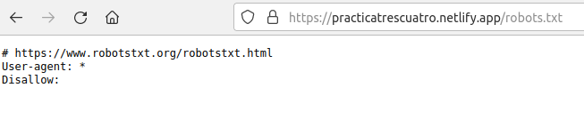
-
Dentro de la carpeta
public, utilizando el editor de texto que prefiráis en vuestro terminal, modificad el archivorobots.txtpara que excluya un directorio que se llamenombre_apellido, utilizando obviamente vuestro nombre y apellido. -
Haz un nuevo
commitypush(del caso anterior, recuerda el commandogitprevio para añadir los archivos a hacer commit) -
Comprueba en el dashboard de Netlify que se ha producido un nuevo deploy de la aplicación hace escasos segundos
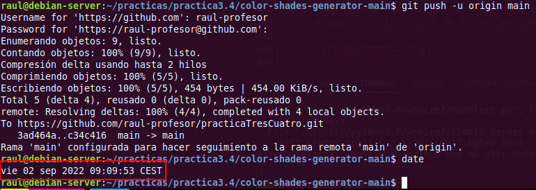

-
Accede a
https://url_de_la_aplicacion/robots.txty comprueba que, efectivamente, se ve reflejado el cambio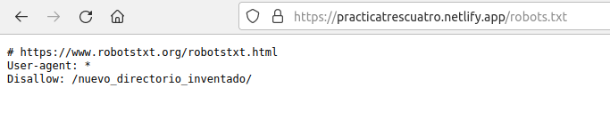
Despliegue aplicaciones desarrolladas en Angular
Un framework muy conocido y utilizado junto a Node.js es Angular.
Desplegar una aplicación desarrollada en Angular es igual que lo visto hasta ahora. Solo hay que tener en cuenta algunas particularidades.
La carpeta donde Angular guarda el build se llama dist y el index.html no está en esa carpeta directamente sino que crea una dentro con el nombre de la aplicación. Así que el directorio para el despliegue es ./dist/nombreaplicacion.
Solo con esto ya podemos desplegar en Netlify exactamente igual que hemos visto antes.
Pero si antes de desplegar en Netlify queremos probar a servir la aplicación desde nuestro propio servidor corriendo el script npm run start hay un cambio. Al hacerlo se sirve la aplicación en "http://localhost:4200". Si estamos en la misma máquina podremos acceder poniendo esa URL en la barra de direcciones de nuestro navegador. Pero si nuestro servidor está en AWS y el navegador en nuestro equipo local, no podemos sustituir localhost por la IP externa de nuestro EC2 como hemos hecho hasta ahora. No funcionará, porque Angular solo permite acceder desde la propia máquina. Si queremos probarlo antes de desplegarlo deberemos primero instalar Angular de forma global con:
Y en lugar de npm run start usaremos:
Y accederemos a la aplicación con http://IPPUBLICA:4200 en el navegador
Atención
Fíjate que primero servimos con IPPRIVADA, que es una IP que aparece bajo "Direcciones IPv4 privadas" y suele empezar por 172 en la consola AWS. No es la IP pública.
Y luego accedemos en el navegador con IPPUBLICA, no con la privada con la que servimos.
Pero si no queremos probar antes de desplegar, todo esto no es necesario.
Referencias
Deploying Node.js applications